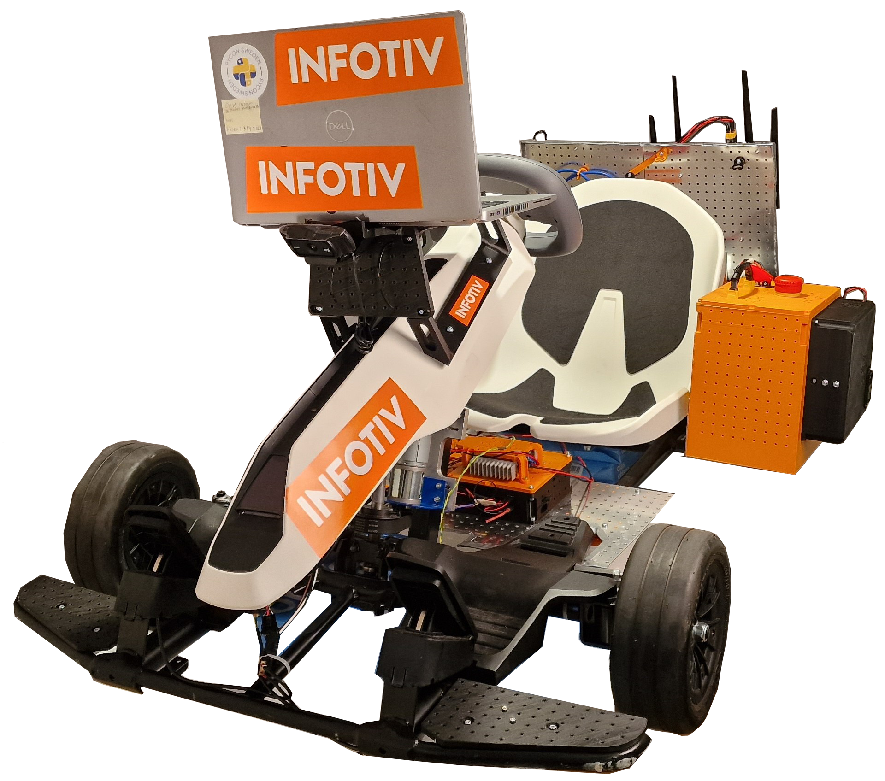
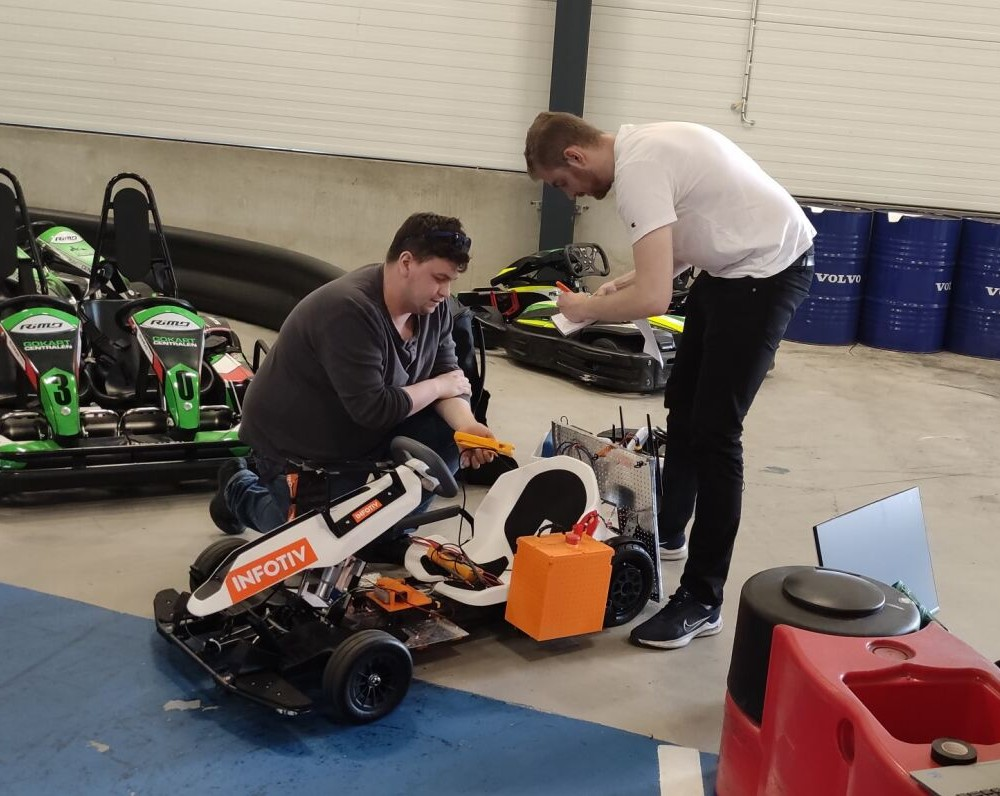
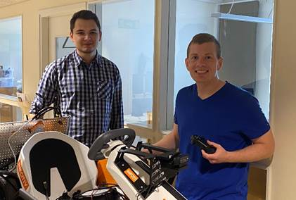

Generation 4 - changelog
Autonomous Platform Generation 4 was started by Fredrik Juthe and Erik Magnusson for their master's thesis during spring 2023. Since then Alexander and Seamus and continued working on it.

AP4 was meant as a fresh start for the autonomous platform project, removing the development issues that occurred with AP3 over time. AP4 was designed from the beginning to be a long time project with clear requirements and better development processes.
Another goal with AP4 is to make it more modular then previous versions. Previous versions had many propriety and hardcoded solutions for a specific problems. These could later on affect the development process by making the previous implementations hard to follow.
A new concept which is trialed on AP4 is the concept of "Centralized" Electrical / Electronic (E/E) and software architecture. In short this means that the heavy computations are performed on a centralized computing unit and the ECUs are only responsible for relaying information to and from the computing unit.
It is built on an electric segway gokart platform. Starting from scratch on a new gokart.
Version 4, June 2023
AP4 was created by Fredrik Juthe and Erik Magnusson as part of a master thesis at Chalmers University of technology spring 2023. Supervisor: Hamid Ebadi

Version 4.1, July 2023
Improving documentation and adding speed sensor by Seamus Taylor, Alexander Rydevald. Supervisor: Hamid Ebadi

Version 4.1.1 August 2023
Improving documentation, Solving comments left in README files. Refactored repository, removed old/unused files, and made it more clean. by Erik Magnusson and Seamus Taylor. Supervisor: Hamid Ebadi
Version 4.2, May 2024
The implementation of the software pipeline for Imitation Learning for achieving autonomous driving using both behavioral cloning (BC) and Human Gated Dataset Aggregation (HG-DAgger) is done by Arvid Petersén and Johan Wellander as part of a master thesis at Chalmers University of technology spring 2024. Supervisor: Hamid Ebadi

Version 4.3, Jan 2025
Building a replica of the go-kart as a way to review and improve the build instructions, and to redesign and enhance various parts of the system by Maria Olsson, Marten Postma, Pär Aronsson. Supervisor: Hamid Ebadi
Version 4.4, Jun 2025
Speed sensor functionality for the new go-kart, including enhancements to the rear wheels, the addition of a software filter for optocouplers, and configurable parameters for wheel size, sampling interval, and sensor disk size. Improved the 3D designs and refined the wiring layout to make the unit more modular and accessible. by Marten Postma. Supervisor: Hamid Ebadi
Version 4.5, Jun 2025
Implementation of LiDAR and SLAM to the platform. An investigation of how LiDAR can be used to Simultaneously Localize a Vehicle and Map its Surroundings using SLAM. Done by David Espedalen and Anton Stigemyr Hill as part of a master thesis at Chalmers University of technology spring 2025. Supervisor: Hamid Ebadi